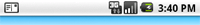
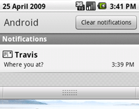

A status bar notification adds an icon to the system's status bar (with an optional ticker-text message) and an expanded message in the "Notifications" window. When the user selects the expanded message, Android fires an Intent that is defined by the notification (usually to launch an Activity). You can also configure the notification to alert the user with a sound, a vibration, and flashing lights on the device.
A status bar notification should be used for any case in which a background Service needs to alert the user about an event that requires a response. A background Service should never launch an Activity on its own in order to receive user interaction. The Service should instead create a status bar notification that will launch the Activity when selected by the user.
The screenshot below shows the status bar with a notification icon on the left side.
The next screenshot shows the notification's expanded message in the "Notifications" window. The user can reveal the Notifications window by pulling down the status bar (or selecting Notifications from the Home options menu).
An Activity or Service can initiate a status bar notification. Because an Activity can perform actions only while it is active and in focus, you should create your status bar notifications from a Service. This way, the notification can be created from the background, while the user is using another application or while the device is asleep. To create a notification, you must use two classes: Notification and NotificationManager.
Use an instance of the Notification class to define the properties of your status bar notification, such as the status bar icon, the expanded message, and extra settings such as a sound to play. The NotificationManager is an Android system service that executes and manages all Notifications. You do not instantiate the NotificationManager. In order to give it your Notification, you must retrieve a reference to the NotificationManager with getSystemService() and then, when you want to notify the user, pass it your Notification object with notify().
To create a status bar notification:
String ns = Context.NOTIFICATION_SERVICE; NotificationManager mNotificationManager = (NotificationManager) getSystemService(ns);
int icon = R.drawable.notification_icon; CharSequence tickerText = "Hello"; long when = System.currentTimeMillis(); Notification notification = new Notification(icon, tickerText, when);
Context context = getApplicationContext(); CharSequence contentTitle = "My notification"; CharSequence contentText = "Hello World!"; Intent notificationIntent = new Intent(this, MyClass.class); PendingIntent contentIntent = PendingIntent.getActivity(this, 0, notificationIntent, 0); notification.setLatestEventInfo(context, contentTitle, contentText, contentIntent);
private static final int HELLO_ID = 1; mNotificationManager.notify(HELLO_ID, notification);
That's it. Your user has now been notified.
The NotificationManager is a system service that manages all notifications. You must retrieve a reference to it with the getSystemService() method. For example:
String ns = Context.NOTIFICATION_SERVICE; NotificationManager mNotificationManager = (NotificationManager) getSystemService(ns);
When you want to send your status bar notification, pass the Notification object to the NotificationManager with notify(int, Notification). The first parameter is the unique ID for the Notification and the second is the Notification object. The ID uniquely identifies the Notification from within your application. This is necessary if you need to update the Notification or (if your application manages different kinds of Notifications) select the appropriate action when the user returns to your application via the Intent defined in the Notification.
To clear the status bar notification when the user selects it from the Notifications window, add the "FLAG_AUTO_CANCEL" flag to your Notification object. You can also clear it manually with cancel(int), passing it the notification ID, or clear all your Notifications with cancelAll().
A Notification object defines the details of the notification message that is displayed in the status bar and "Notifications" window, and any other alert settings, such as sounds and blinking lights.
A status bar notification requires all of the following:
Optional settings for the status bar notification include:
The starter-kit for a new Notification includes the Notification(int, CharSequence, long) constructor and the setLatestEventInfo(Context, CharSequence, CharSequence, PendingIntent) method. These define all the required settings for a Notification. The following snippet demonstrates a basic Notification setup:
int icon = R.drawable.notification_icon; // icon from resources CharSequence tickerText = "Hello"; // ticker-text long when = System.currentTimeMillis(); // notification time Context context = getApplicationContext(); // application Context CharSequence contentTitle = "My notification"; // expanded message title CharSequence contentText = "Hello World!"; // expanded message text Intent notificationIntent = new Intent(this, MyClass.class); PendingIntent contentIntent = PendingIntent.getActivity(this, 0, notificationIntent, 0); // the next two lines initialize the Notification, using the configurations above Notification notification = new Notification(icon, tickerText, when); notification.setLatestEventInfo(context, contentTitle, contentText, contentIntent);
You can update the information in your status bar notification as events continue to occur in your application. For example, when a new SMS text message arrives before previous messages have been read, the Messaging application updates the existing notification to display the total number of new messages received. This practice of updating an existing Notification is much better than adding new Notifications to the NotificationManager because it avoids clutter in the Notifications window.
Because each notification is uniquely identified by the NotificationManager with an integer ID, you can revise the notification by calling setLatestEventInfo() with new values, change some field values of the Notification, and then call notify() again.
You can revise each property with the object member fields (except for the Context and the expanded message title and text). You should always revise the text message when you update the notification by calling setLatestEventInfo() with new values for contentTitle and contentText. Then call notify() to update the notification. (Of course, if you've created a custom expanded view, then updating these title and text values has no effect.)
You can alert the user with the default notification sound (which is defined by the user) or with a sound specified by your application.
To use the user's default sound, add "DEFAULT_SOUND" to the defaults field:
notification.defaults |= Notification.DEFAULT_SOUND;
To use a different sound with your notifications, pass a Uri reference to the sound field. The following example uses a known audio file saved to the device SD card:
notification.sound = Uri.parse("file:///sdcard/notification/ringer.mp3");
In the next example, the audio file is chosen from the internal MediaStore's ContentProvider:
notification.sound = Uri.withAppendedPath(Audio.Media.INTERNAL_CONTENT_URI, "6");
In this case, the exact ID of the media file ("6") is known and appended to the content Uri. If you don't know the exact ID, you must query all the media available in the MediaStore with a ContentResolver. See the Content Providers documentation for more information on using a ContentResolver.
If you want the sound to continuously repeat until the user responds to the notification or the notification is cancelled, add "FLAG_INSISTENT" to the flags field.
Note: If the defaults field includes "DEFAULT_SOUND", then the default sound overrides any sound defined by the sound field.
You can alert the user with the the default vibration pattern or with a vibration pattern defined by your application.
To use the default pattern, add "DEFAULT_VIBRATE" to the defaults field:
notification.defaults |= Notification.DEFAULT_VIBRATE;
To define your own vibration pattern, pass an array of long values to the vibrate field:
long[] vibrate = {0,100,200,300};
notification.vibrate = vibrate;
The long array defines the alternating pattern for the length of vibration off and on (in milliseconds). The first value is how long to wait (off) before beginning, the second value is the length of the first vibration, the third is the next length off, and so on. The pattern can be as long as you like, but it can't be set to repeat.
Note: If the defaults field includes "DEFAULT_VIBRATE", then the default vibration overrides any vibration defined by the vibrate field.
To alert the user by flashing LED lights, you can implement the default light pattern (if available), or define your own color and pattern for the lights.
To use the default light setting, add "DEFAULT_LIGHTS" to the defaults field:
notification.defaults |= Notification.DEFAULT_LIGHTS;
To define your own color and pattern, define a value for the ledARGB field (for the color), the ledOffMS field (length of time, in milliseconds, to keep the light off), the ledOnMS (length of time, in milliseconds, to keep the light on), and also add "FLAG_SHOW_LIGHTS" to the flags field:
notification.ledARGB = 0xff00ff00; notification.ledOnMS = 300; notification.ledOffMS = 1000; notification.flags |= Notification.FLAG_SHOW_LIGHTS;
In this example, the green light repeatedly flashes on for 300 milliseconds and turns off for one second. Not every color in the spectrum is supported by the device LEDs, and not every device supports the same colors, so the hardware estimates to the best of its ability. Green is the most common notification color.
You can add several more features to your notifications using Notification fields and flags. Some useful features include the following:
See the Notification class reference for more information about additional features that you can customize for your application.
By default, the expanded view used in the "Notifications" window includes a basic title and text message. These are defined by the contentTitle and contentText parameters of the setLatestEventInfo() method. However, you can also define a custom layout for the expanded view using RemoteViews. The screenshot to the right shows an example of a custom expanded view that uses an ImageView and TextView in a LinearLayout.
To define your own layout for the expanded message, instantiate a RemoteViews object and pass it to the contentView field of your Notification. Pass the PendingIntent to the contentIntent field.
Creating a custom expanded view is best understood with an example:
custom_notification_layout.xml and
build it like so:
<LinearLayout xmlns:android="http://schemas.android.com/apk/res/android"
android:orientation="horizontal"
android:layout_width="fill_parent"
android:layout_height="fill_parent"
android:padding="3dp"
>
<ImageView android:id="@+id/image"
android:layout_width="wrap_content"
android:layout_height="fill_parent"
android:layout_marginRight="10dp"
/>
<TextView android:id="@+id/text"
android:layout_width="wrap_content"
android:layout_height="fill_parent"
android:textColor="#000"
/>
</LinearLayout>
This layout is used for the expanded view, but the content of the ImageView and TextView still needs to be defined by the applicaiton. RemoteViews offers some convenient methods that allow you to define this content...
RemoteViews contentView = new RemoteViews(getPackageName(), R.layout.custom_notification_layout); contentView.setImageViewResource(R.id.image, R.drawable.notification_image); contentView.setTextViewText(R.id.text, "Hello, this message is in a custom expanded view"); notification.contentView = contentView;
As shown here, pass the applicaiton's package name and the layout resource ID to the RemoteViews constructor. Then, define the content for the ImageView and TextView, using the setImageViewResource() and setTextViewText(). In each case, pass the reference ID of the appropriate View object that you want to set, along with the value for that View. Finally, the RemoteViews object is passed to the Notification in the contentView field.
Intent notificationIntent = new Intent(this, MyClass.class); PendingIntent contentIntent = PendingIntent.getActivity(this, 0, notificationIntent, 0); notification.contentIntent = contentIntent;
mNotificationManager.notify(CUSTOM_VIEW_ID, notification);
The RemoteViews class also includes methods that you can use to easily add a Chronometer or ProgressBar in your notification's expanded view. For more information about creating custom layouts with RemoteViews, refer to the RemoteViews class reference.
Note: When creating a custom expanded view, you must take special care to ensure that your custom layout functions properly in different device orientations and resolutions. While this advice applies to all View layouts created on Android, it is especially important in this case because your layout real estate is very restricted. So don't make your custom layout too complex and be sure to test it in various configurations.